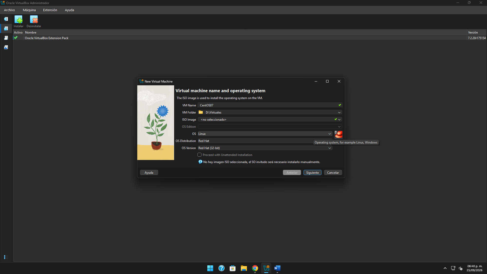
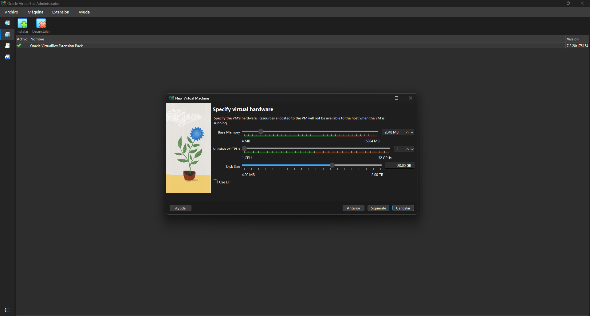
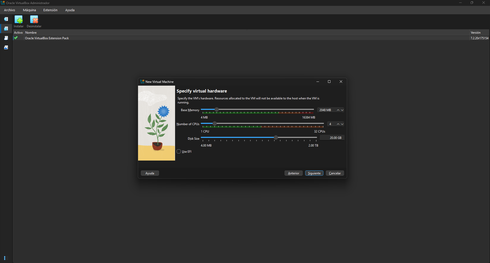
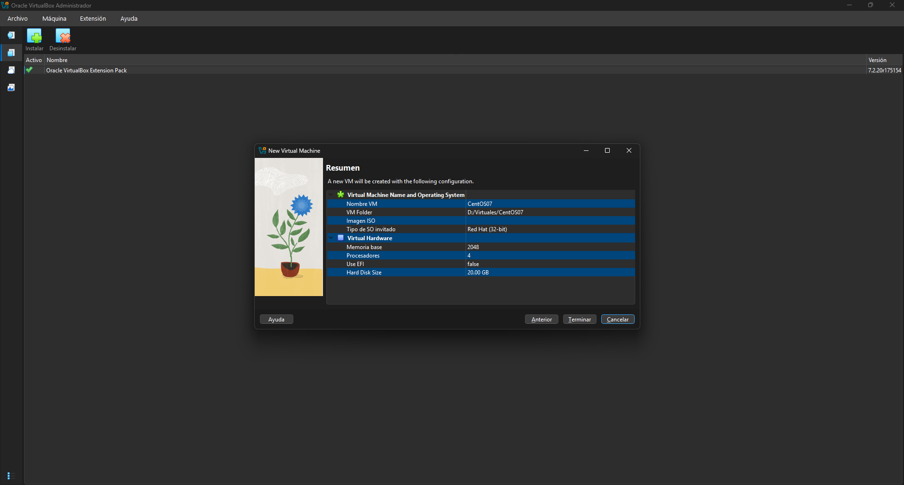
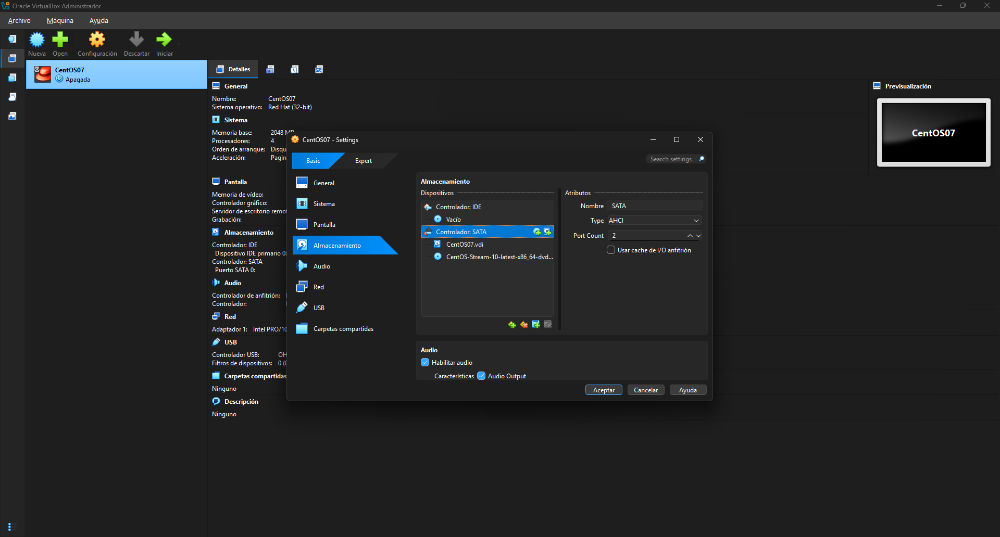

Instálalo en tu equipo y ábrelo antes de continuar.
Linux en una máquina virtual
CentOS, paso a paso.
Crea la máquina en Oracle VirtualBox, conecta la imagen ISO y completa la instalación. Sigue las capturas y ajusta un detalle importante antes de iniciar.
RAM 2 GB
CPU 4 procesadores
Disco virtual 20 GB
ISO x86_64
Preparación
Antes de empezar
Ten estos elementos listos para que el asistente de instalación no se interrumpa.
Descarga la imagen DVD x86_64 desde CentOS. Ocupa cerca de 10 GB.
Reserva 2 GB de RAM y espacio libre para el disco virtual de 20 GB.
Configuración en VirtualBox
Crea y prepara la VM
Las imágenes son las capturas que compartiste. Puedes abrir cada una para verla a tamaño completo.
Inicia el asistente de nueva máquina
Desde la ventana principal de VirtualBox, pulsa Nueva.
- Escribe un nombre reconocible, por ejemplo CentOS07.
- Elige una carpeta del equipo con suficiente espacio.
- En Imagen ISO, selecciona el archivo DVD de CentOS Stream 10. Si lo dejarás para después, podrás montarlo en Almacenamiento.
- Indica Linux y Red Hat (64-bit).
- Desmarca la instalación desatendida si quieres seguir el instalador manual descrito aquí.
En la captura todavía dice “<no seleccionado>” en Imagen ISO. Está bien si la conectas en el paso 4.

Asigna memoria y espacio de disco
Usa los valores de referencia de las capturas y ajústalos a la capacidad de tu equipo.
Memoria base2048 MB
Procesadores4 CPU
Disco virtual20 GB
Escribe 2048 MB en Memoria base. En Procesadores, aumenta el valor a 4. Asigna 20 GB al disco virtual.
Mantén los indicadores de recursos en la zona verde y deja memoria y CPU disponibles para Windows. Para una instalación con escritorio gráfico, 4 GB de RAM y un disco de 30 GB ofrecen más margen si tu equipo puede asignarlos.


Revisa el resumen antes de terminar
Confirma el nombre, la memoria, el procesador, el disco y el tipo de sistema.
Comprueba que aparezcan 2048 MB, 4 procesadores y 20 GB. En la fila “Tipo de SO invitado”, verifica que diga Red Hat (64-bit).
La captura del resumen conserva “Red Hat (32-bit)”. Si ves ese valor, pulsa Anterior y cámbialo antes de terminar. El ISO x86_64 necesita una VM de 64 bits.

Conecta la imagen ISO al lector virtual
Si no elegiste la ISO al crear la VM, móntala desde su configuración.
- Selecciona la VM apagada y abre Configuración → Almacenamiento.
- En el controlador SATA, identifica el dispositivo óptico o la unidad vacía.
- Pulsa el icono del disco, elige Seleccionar un archivo de disco y busca el ISO de CentOS Stream.
- Confirma que la ISO aparezca debajo del controlador y pulsa Aceptar.
El archivo que se ve en tu captura es CentOS-Stream-10-latest-x86_64-dvd1.iso. El VDI es el disco duro virtual; el DVD ISO contiene el instalador.

Arranca la VM y completa el instalador
Ahora CentOS se instalará dentro del disco virtual, sin modificar el disco de Windows.
- Selecciona CentOS07 y pulsa Iniciar. En el menú de arranque, elige Install CentOS Stream 10.
- Selecciona idioma y teclado. En Installation Destination, marca únicamente el disco virtual de 20 GB y confirma el particionado automático.
- En Software Selection, elige Server with GUI si quieres escritorio; Minimal Install requiere menos recursos y ofrece terminal.
- Configura fecha y hora. Si aparece Red, habilita la conexión. Pulsa Begin Installation.
- Define la contraseña de root y crea un usuario. Al terminar, pulsa Reboot System.
- Si el instalador vuelve a aparecer, en la ventana de VirtualBox abre Dispositivos → Unidades ópticas → Quitar disco de la unidad virtual y reinicia.
La guía visual termina al conectar la ISO. Los nombres de algunas pantallas del instalador pueden variar un poco según la imagen y el idioma seleccionados.
Listo
Comprueba que quedó instalado
La VM inicia desde el disco
Después de retirar la ISO aparece la pantalla de inicio de CentOS, no el instalador.
Puedes entrar con tu usuario
Inicia sesión con la cuenta que creaste durante la instalación.